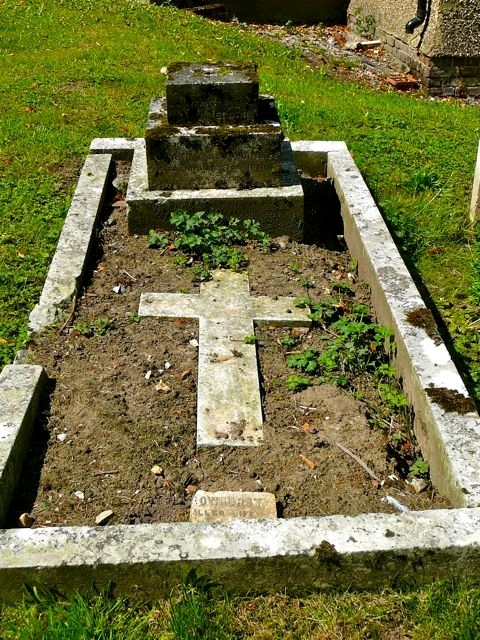

Harry Edgar Dale cAug 1870 - 1919
[ Home ] | [ Calendar ] | [ Surnames Index ] | [ Errors ] | [ Family History ]A coal labourer and the child of Edward Dale (a bricklayer's labourer) and Sophia Baldock, Harry Dale, the first cousin three-times-removed on the father's side of Nigel Horne, was born in Thanington, Kent, England c. Aug 18701 and baptised there at St Nicholas on 28 Aug 1870.
During his life, he was living at Modern Cottages, Wincheap Street in Thanington on 2 Apr 18714; at Sturry Road, Canterbury, Kent, England on 3 Apr 18815 and on 31 Mar 19016 (when he was living with his); and at Lion Cottages, Sturry Road in Canterbury on 2 Apr 19117 (when he was living with his).
He died on 14 Jan 1919 in Thanington2 and was buried there at St Nicholas on 18 Jan 19193.
Parents
- Edward was born c. Nov 1837
- Sophia was born in 1837
Citations
- England & Wales births 1837-2006 - Findmypast
- England & Wales deaths 1837-2007 - Findmypast
- Kent, Canterbury Archdeaconry burials 1538-1988 - Findmypast
- 1871 England, Wales & Scotland Census - Findmypast (was age 0 and the son of the head of the household)
- 1881 England, Wales & Scotland Census - Findmypast (was age 10 and the son of the head of the household)
- 1901 England, Wales & Scotland Census - Findmypast (was age 30 and the son of the head of the household)
- 1911 Census for England & Wales - Findmypast (was age 40 and the son of the head of the household)
Media
Harry Edgar Dale - gravestone
Harry Edgar Dale - grave

England & Wales births 1837-2006 - BMD/B/1870/3/AZ/000153/114
Kent, Canterbury Archdeaconry burials 1538-1988 - GBPRS/CANT/D/95508202
England & Wales deaths 1837-2007 - BMD/D/1919/1/AZ/000320/085
1911 Census for England & Wales - GBC/1911/RG14/04332/0103/3
Kent Baptisms - GBPRS/CANT/B/96714008
1881 England, Wales & Scotland Census - GBC/1881/0004722238
1901 England, Wales & Scotland Census - GBC/1901/0005476334
Family Tree

Map
Generated by ged2site. Last updated on Jul 3, 2024
Known Issues
Census information missing between Census UK 1881 and Census UK 1901